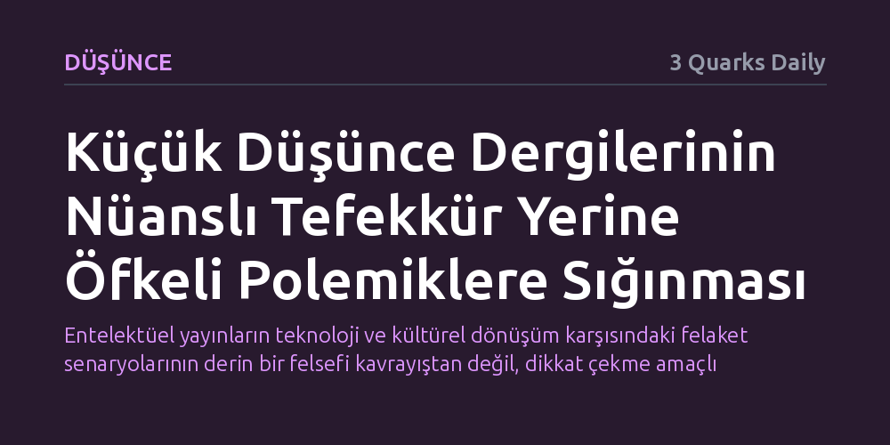

DUSUNCE · 3 Quarks Daily · 2026-10-19
Kültür eleştirmeni Naomi Kanakia, bağımsız fikir dergilerinin derinlikli bir tefekkür geliştirmek yerine öfke dolu polemiklerle ve kriz tellallığıyla dikkat çekmeye çalıştığını gösteriyor. n+1 dergisinin yapay zekâyı insanlığın ve yaratıcılığın sonu ilan eden katı manifestosu, bu mizahsız ve alarmist tavrın somut bir örneğini oluşturuyor.
Entelektüel yayınların teknoloji ve kültürel dönüşüm karşısındaki felaket senaryolarının derin bir felsefi kavrayıştan değil, dikkat çekme amaçlı öfkeli polemik alışkanlığından beslendiğini fark ettirir.

Kültür eleştirmeni Naomi Kanakia, "Woman of Letters" adlı bülteninde yayımladığı geniş soluklu yazısında, düşünce dünyasının köşe taşlarından sayılan bağımsız süreli yayınları (little magazines) kapsamlı bir incelemeye tabi tutuyor. Kanakia, önyargılı genellemelerden kaçınarak metodik bir yol izliyor; bu alandaki dergilerden temsili bir seçki oluşturup seçilen sayıların her birini baştan sona, büyük bir dikkat ve sabırla okuyor.
Kanakia’nın bu okumalardan damıttığı gözlemler, ağdalı akademik jargondan uzak, duru ve okuru yormadan içine çeken bir dille sunuluyor. Yazar; zekâ, mizah ve Blaise Pascal'ın incelikli kavrayışı anlatmak için kullandığı 'l’esprit de finesse' kavramını anımsatan düşünsel bir kıvraklıkla bu dergilerin mevcut durumunu tahlil ediyor.
Kanakia’nın incelemesindeki en sarsıcı tespit, günümüz küçük dergilerinin önemli bir kısmının varlığını düşünsel zenginlikten ziyade hırçın polemiklere ve öfke dolu başyazılara borçlu olmasıdır. Sakin ve soğukkanlı bir tahlil yerine hınç ve infial üreten bu yayınlar, okurlarını belirli bir kutuplaşma üzerinden konsolide etmeye çalışıyor.
Bu eğilimin en bariz örneği olarak n+1 dergisinin yapay zekâ tartışmalarına dair yayımladığı son başyazı gösteriliyor. Dergi editörleri, hiçbir mizah veya öz eleştiri barındırmayan sert bildirilerinde, yapay zekânın insan türü için varoluşsal bir tehdit oluşturduğunu ve yaratıcılığın kesin ölümünü müjdelediğini öne sürüyor. Kanakia'ya göre bu tür manifestolar, incelikli bir felsefi derinlik taşımaktan ziyade öfkeye dayalı bir savunma refleksini yansıtıyor.
Kültür dergilerinin yeni teknolojiler veya bilinmeyen olgular karşısında hemen felaket tellallığına sarılması, aslında karmaşık meselelerle yüzleşmekten kaçınmanın konforlu bir yolunu oluşturuyor. Bir olgunun nüanslarını ve çelişkilerini anlamak yerine onu mutlak bir kıyamet senaryosuyla damgalamak, yazar ve editörlere anlık bir ahlaki üstünlük sağlasa da düşünceyi sığlaştırıyor.
Eleştirel düşüncenin asıl işlevi peşin hükümlü öfkeler üretmek değil, belirsizlikleri dürüstçe karşılayabilmektir. Bağımsız yayınlar, okurlarının endişelerini körükleyen hırçın hezeyanlara teslim olduklarında, tam da karşı çıktıklarını iddia ettikleri düşünsel çoraklaşmanın bizzat taşıyıcısı haline geliyor.